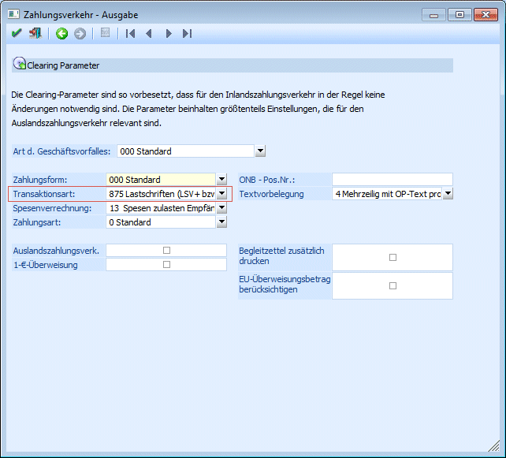

Mit dieser Transaktionsart ist es möglich, "Schweizer-Inlands-Lastschriften" zu erstellen.
In den Clearing-Parametern (bzw. nachträglich im Clearing editieren auch möglich) muss dafür als Transaktionsart "875 Lastschriften (LSV+ bzw. BBD)" gewählt werden.
ü Anschließend darauf steht zusätzlich zur Art des Geschäftsvorfalles "000 Standard" auch die Auswahl "SAL-Salärzahlung" zur Verfügung, wobei der Unterschied zu "000 Standard" jener ist, dass die Salärzahlungen von den Banken etwas anders behandelt werden. Z.B. werden auf Fehlerlisten/Rückgabelisten von den Banken gewisse Informationen (wie Beträge o.ä.) nicht mitausgedruckt.
ü Als Zahlungsform kann bei dieser Transaktionsart nur "000 Standard" gewählt werden.
In weiterer Folge erhält man dadurch bei der Clearingausgabe eine so genannte "LSV+"-Datei.
